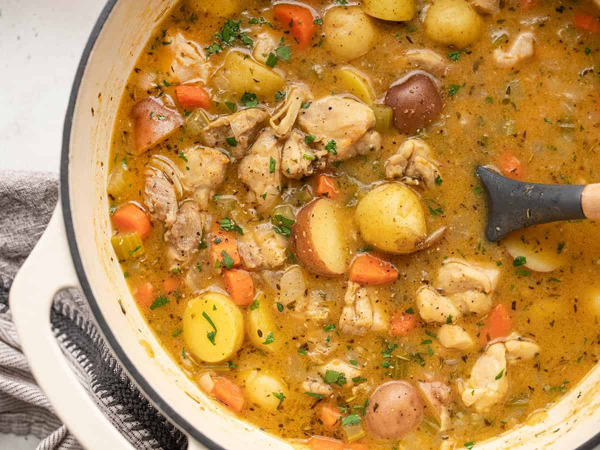

Home
Rabanastre Chicken Stew

Description:
“I’d just hate to see the Consul upset because his food wasn’t ready on
time.”
—Vaan, FFXII
Ingredients:
- 2 Tbsp. butter
- 2 Tbsp. olive oil
-
1 large Yellow Onion, peeled and diced (about 2 cups)
- 1 cup blanched, slivered raw Almonds
-
3 lbs. boneless, Skinless Chicken Breast, cut into 1” pieces
- 1 Tbsp. Ground Coriander
- 1 Tbsp. Ground Cumin
- 1 Tbsp. Smoked Paprika
- 1 tsp. Turmeric
- 1 tsp. Ground White Pepper
- 1 tsp. Ground Dried Ginger
- 1 tsp. Sea Salt
- 8-12 Garlic Cloves (1 bulb), peeled and halved
- 1 lb. Carrots, scrubbed and sliced diagonally
- 12 oz. Frozen Artichoke hearts
-
1 15-oz. can of Garbanzo Beans (Chickpeas), drained and rinsed
- 8 cups Chicken Broth
- 1 Cinnamon Stick
- ¾ oz. Flat-Leaf Italian Parsley, chopped
- Juice of 1 Lemon (about 2 Tbsp to ¼ cup)
Steps:
-
1. Heat butter and oil in a large soup pot over medium-high heat. Add
onions and cook for 10 minutes. Stir frequently and reduce heat if the
onions are browning too quickly.
-
2. Add the almonds and chicken pieces to the soup pot. Sprinkle with
spices and salt. Brown chicken on all sides, about 10 minutes.
-
3. Add garlic and stir well to combine. Cook 5 minutes. Add carrots and
artichoke hearts. Stir and continue to cook, about 5 minutes. Add
chickpeas, broth, and cinnamon stick, and bring to a boil.
-
4. Reduce heat to medium and simmer, uncovered, about 10 minutes, until
chicken is cooked through.
-
5. Remove from heat and stir in parsley and lemon juice. Remove cinnamon
stick and serve.